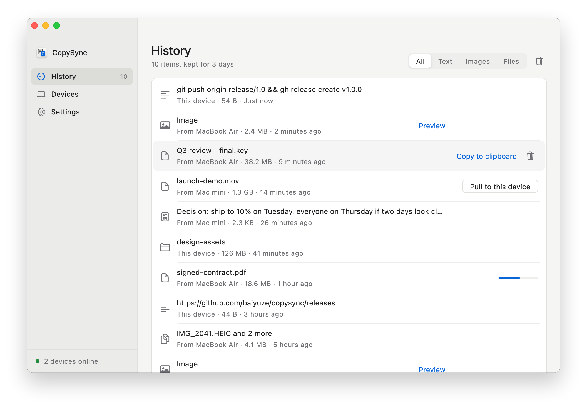
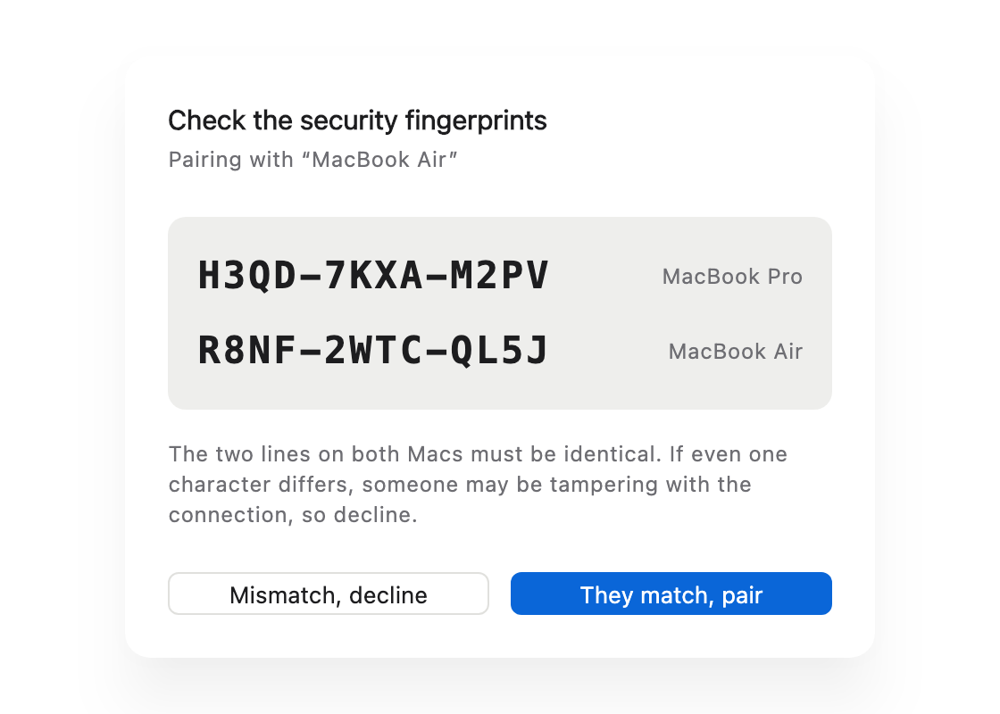

Copy on this computer.
Paste on that one.
Mac and Windows. Text, images, files, whole folders. No shared account required, no shared network required. Data moves directly between your devices, and stays encrypted even when it passes through your own server.
Everything you copied, on every Mac
History keeps the last 3 days, ready to go back on the clipboard. Files under 50 MB have already arrived by the time you switch Macs; larger ones are a click away. The interface is in Simplified Chinese for now.

Why not what's already there
If you work on two computers, you move things between them all day: a snippet of text, a screenshot, a file. The existing options each fall a little short:
- Universal Clipboard needs both Macs on the same Apple ID, close together, with Bluetooth and Wi‑Fi on. A work Mac and a personal one rarely share an Apple ID, and large files often fail halfway.
- AirDrop makes you pick a device and accept on the other side every time, and it moves files, not the clipboard.
- Messaging yourself means manual downloads, recompressed images, and files left on someone else's server.
- With one Mac and one Windows PC, none of the built-in options work at all.
| CopySync | Universal Clipboard | AirDrop | Chat apps | |
|---|---|---|---|---|
| Different Apple IDs | Yes | No | Needs accepting | Yes |
| Between Mac and Windows | Yes | No | No | Yes |
| Different networks (home and office) | Yes | No | No | Yes |
| Paste right away, nothing to accept | Yes | Yes | No | No |
| Files and whole folders | Yes | Unreliable | Yes | Zip first |
| Find something you copied earlier | Yes | No | No | Scroll back |
| Content stays off third-party servers | Yes | Yes | Yes | No |
How it works
Your two computers open an encrypted connection to each other. Your server only helps them find one another, and relays traffic when a direct path can't be made.
What happens when you copy
-
Notice
On Mac, the background service checks the clipboard's change count at short intervals; reading the count and types needs no permission and never shows a prompt. On Windows, the system tells it the moment you copy.
-
Send
Text travels inside the message. Images and files under 50 MB are streamed right away. Larger files are announced as a record and sent when you ask for them.
-
Paste
The other computer stores the content locally, then puts it on the clipboard. What you paste with ⌘V or Ctrl+V is a real local file.
Direct on office networks too
Office networks with two ISPs, or carriers with a pool of NAT addresses, have several uplinks and pick one per destination. CopySync 1.0 knew only one of its addresses there and had to relay through the server. 1.1 probes every uplink and tells the peer about all of them.
What changed
- One shared port. All connections send and receive on one local UDP port. Previously each STUN server got its own port, so the answers didn't apply to each other.
- Every uplink probed. Seven IP-diverse servers are queried from that port at once, yielding one address per uplink. Addresses poisoned by DNS are dropped first.
- All of them sent to the peer. The peer tries each address; the one matching the real uplink gets through.
- Uplinks remembered. If a round misses an uplink that keeps ports unchanged, its address is filled in as uplink IP plus local port.
- A rule for who sends first. Some routers lock a port when the other side's packet arrives first, and punching fails. One side now announces its uplink addresses first; the other sends packets to them before announcing its own. Retries alternate the order.
- Relay first, direct later. When the peer has just started, its addresses can arrive a moment late and the first handshake lands on the relay. CopySync punches again while the link is idle and switches to direct when that works.
A real office network
| Uplink | Public port |
|---|---|
| Uplink A | Unchanged |
| Uplink B | Unchanged |
| Uplink C | Rewritten, same for every destination |
| Uplink D | Rewritten |
Before, this Mac and one at home could only relay, capped at 0.6 MB/s by the server's bandwidth. Now they connect directly, about 3 seconds after reaching the server.
Checked against real network topologies
The NAT lab builds the eleven topologies below with Linux network namespaces and iptables and runs CopySync's actual connection code through each. It runs on every commit.
| Scenario | Result |
|---|---|
| Single uplink ↔ home router | Direct |
| Two uplinks, previous version (control) | Relay |
| Two uplinks ↔ home router | Direct |
| Four uplinks ↔ home router | Direct |
| Two uplinks, second not probed, no history | Relay |
| Two uplinks, second not probed, with history | Direct |
| Two uplinks ↔ two uplinks | Direct |
| Two uplinks ↔ NAT that randomizes ports | Relay |
| Blocked at first, network recovers later | Relay, then direct |
| Office router locks a port for unsolicited packets | Direct |
| Home router locks a port for unsolicited packets | Relay, then direct after one retry |
Measurements, design trade-offs and lessons learned are in the design document (Chinese).
Your server can't see what you copy
- No accounts, no stored content. A device's identity is an Ed25519 key, and its ID is derived from the public key, so the server verifies identity without a user table.
- You compare fingerprints when pairing. Both screens show the same two lines: the fingerprint of each Mac's key. The server could swap keys in transit, but then the two screens would no longer match — that check is what stops a man in the middle.
- Every message after that is signed, so the server can't impersonate your device. The direct channel's certificate is checked again after the handshake; a mismatch drops the connection.
- The relay only forwards ciphertext. TURN carries encrypted packets, and relay credentials are issued per device and expire after 12 hours.

When things go wrong
Every network is different. Each of these cases was considered, and each has a test.
- No direct path between the computers
- Common behind symmetric NAT and corporate firewalls. Traffic switches to the TURN relay on your server, still encrypted, and the device list shows "relay".
- Public STUN servers unreachable
- Public STUN is unreliable in some regions, including mainland China. Your server runs its own STUN, and clients prefer it.
- An office network with several uplinks
- These networks pick an uplink per destination, so a single probe only reveals one of your addresses. CopySync probes several servers from one port and sends the peer its address on every uplink to try in turn.
- Connected through the relay first
- The relay handshake is fast and sometimes beats the direct path. Once connected, the side that started the connection punches again while idle and switches to direct when that works, never in the middle of a transfer.
- The other Mac sleeps, drops off or restarts
- A connection that dies silently is noticed, closed and reconnected. Anything you copy meanwhile is kept and added to the other Mac's history once it's back, without overwriting what's on its clipboard now.
- Server connection drops
- Reconnects automatically: the delay starts at 1 second and doubles up to 30, with jitter so devices don't all reconnect at once. The app shows the status live.
- File too large
- Above the limit only a record is synced, pulled when you need it. If the source file is gone by then, you get a clear message instead of a vague failure.
- Pasting into plain-text fields
- Rich text copied from the web is written as both HTML and plain text, so no markup leaks into what you paste.
- A file name Windows doesn't allow
- Colons, question marks and a few other characters are fine in Mac file names but not on Windows. They arrive as the matching full-width characters, so the name still reads the same, and two names that differ only in case never overwrite each other.
- Copying a password
- On Windows, password managers mark what they copy as "don't record". CopySync skips it: not synced, not kept in the history.
- Clipboard access not granted yet
- Content isn't read, which would block on a prompt a background process can't show. The app asks you to grant access and links straight to the setting.
- Background service crashes
- launchd on Mac, and CopySync's own supervisor on Windows, restart it, throttled to once every 10 seconds.
- App updated or moved
- On launch the app re-points its login item and restarts the service on the new version.
Install
Install the app on each computer, and set up a server both of them can reach. If both share a LAN, the server can run on one of your Macs.
On a Mac
- Download CopySync.dmg, open it and drag CopySync into Applications.
- Open it from Applications. The first time, macOS says it can't verify the developer: CopySync isn't notarized by Apple yet. Go to System Settings → Privacy & Security and click Open Anyway near the bottom. You only do this once.
- Click 启用后台同步 (Enable background sync).
- In 设置 (Settings), enter your server as
ws://server-address:8787/signaland press Return. - When macOS asks whether CopySync may read the clipboard, allow it.
On Windows
- Download CopySync-Setup.exe and run it. It installs for the current user, no administrator rights needed. CopySync isn't code-signed yet, so Windows says "Windows protected your PC": click More info, then Run anyway. To skip the installer, get the portable zip.
- Open CopySync and click 启用后台同步 (Enable background sync). After you close the window it keeps running in the notification area.
- In 设置 (Settings), enter your server address and press Enter. Allow it if Windows Firewall asks.
Pairing
On one computer, choose 设备 → 添加设备 (Devices → Add device) to get a 6-character code; enter it on the other, and confirm once both screens show the same two fingerprints. Mac with Windows, or two Windows PCs, works the same way.
On the server
Any Linux, as root. On ARM, replace amd64 with arm64.
curl -LO https://github.com/baiyuze/copysync/releases/latest/download/copysync-server-linux-amd64.tar.gz
tar xzf copysync-server-linux-amd64.tar.gz
cd copysync-server-linux-amd64
sudo ./install.sh YOUR_PUBLIC_IPThe script registers a systemd service that starts on boot and prints the address to enter in the app. Open these ports in your firewall or security group:
| Port | Purpose |
|---|---|
| 8787/tcp | Signaling |
| 3478/udp | STUN and TURN |
| 32768–60999/udp | Relay ports, assigned by the OS |
Docker works too; see the server deployment guide.
Specifications
| Version | 1.2.0, released |
|---|---|
| Mac app | macOS 13 Ventura or later; universal binary for Intel and Apple silicon, no Rosetta; 45 MB download |
| Windows app | Windows 10 (21H2 or later) and Windows 11, x64; installs per user, no administrator rights; about 21 MB download |
| Server | Linux on x86_64 or ARM64 (systemd or Docker), or macOS; about 15 MB of RAM |
| Content | Plain text, rich text, images and screenshots, files, folders; each type can be turned off |
| Transport | WebRTC data channels, direct first with TURN relay fallback; every uplink probed on multi-uplink networks; files streamed as tar + zstd |
| Encryption and identity | End-to-end DTLS; Ed25519 device keys; every signaling message signed |
| Pairing | 6-character code valid for 5 minutes, using an alphabet without look-alikes such as 0/O and 1/I; fingerprints compared by you |
| Auto-sync limit | 50 MB by default, adjustable from 1 MB to 1 GB |
| History | 3 days by default, adjustable from 1 hour to 30 days; expired items removed automatically |
| Measured speed | A 20 MB file transfers in about 330 ms over a direct LAN connection, checksums matching |
| Built with | Go for the background service and server (pure Go calling Win32 on Windows), Flutter for the app (one codebase for Mac and Windows), Protocol Buffers for messages |
| License | MIT |
Questions
How is this different from Universal Clipboard?
Universal Clipboard needs both devices on the same Apple ID, with Bluetooth and Wi‑Fi on, close to each other. CopySync only needs both computers to reach your server, so different Apple IDs work, one Mac and one Windows PC work, and so does one at home and one at the office. It also keeps a history and lets you pull large files on demand.
If your Macs share an Apple ID, sit side by side, and you mostly copy text, the built-in feature is already enough.
Can the server see what I copy?
No. With a direct connection the data never touches the server. When it relays, it forwards DTLS-encrypted packets. It keeps no accounts and stores no clipboard content. The code is open, so you can check.
Does it connect directly on office networks with several uplinks?
Yes. These networks pick an uplink per destination. CopySync probes several servers from one port to learn its address on every uplink and sends them all to the peer, which tries each one. A Mac behind a 4-uplink office network connects directly to a home connection in our tests. Peers behind NATs that randomize ports still fall back to the relay.
Do I need my own server?
Yes. There is no public server, so nobody's data passes through anyone else's machine. On a LAN, run the server on one of your Macs. Across networks you need a machine with a public IP; the smallest cloud VM is enough.
Windows? iPhone?
Windows 10 and 11 (x64) are supported from version 1.2 and work together with Macs. Files you paste on Windows are real files you can drop into Explorer, WeChat or Office.
iPhone and iPad aren't supported: iOS doesn't let apps watch the clipboard in the background, so copy-and-it's-there can't work.
Why does the system warn me the first time?
CopySync isn't notarized by Apple yet, and the Windows build isn't code-signed yet; both require paid certificates.
On Mac, open System Settings → Privacy & Security and click Open Anyway near the bottom. On Windows, click More info and then Run anyway in the "Windows protected your PC" prompt. You only do this once. You can also build it from source.
What about large files?
By default, anything under 50 MB is pushed to the other computer as you copy it, so you can paste right away. Larger files sync as a record; pull them from the history when you need them. The limit is adjustable in Settings.
Is it free?
Yes. CopySync is open source under the MIT license, with the source on GitHub.